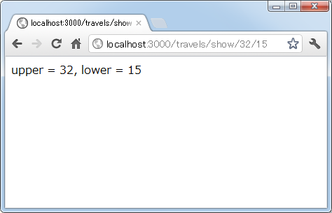

パラメータの取得
通常アプリケーションを利用する場合、単にリクエストだけを送信することは少なく、例えば新しいデータを登録する場合には登録する情報をブラウザ上で入力し、パラメータとしてリクエストと一緒に送信されてきます。ここでは送られて来たパラメータをアプリケーション側で取り出して利用する方法を確認します。
1.パラメータの取得
2.クエリ形式でのパラメータ
3.POSTを使って送信されたパラメータの取得
4.パラメータでハッシュを渡す
5.パラメータで配列を渡す
パラメータの取得
利用者からのリクエストにパラメータをどのように含めるのかは「ルーティングの設定」次第ではありますが、HTTPメソッドとしてGETを使う場合、Railsでは次のようなURL形式でパラメータをURLに含めてリクエストを送信します。
例として「travels」コントローラの「show」アクションを呼び出す時にパラメータ名「id」の値をリクエストに含める場合は次のようなRLでアクセスします。
http://localhost:3000/travels/show/10
これに対し、例えばルーティングを次のように設定します。
match 'travels/show/:id' => 'travels#show'
するとリクエストに含まれる「10」という値をパラメータ名「id」で取得することができます。そしてアクションメソッドの中では、次のように記述することでパラメータ名を指定して値を取得することができます。
params[:パラメータ名]
先程の場合であれば次のように記述を行うことでパラーメータの値を取得して利用できます。
class TravelsController < ApplicationController
def show
@id = params[:id]
end
end
では実際に試してみます。「sample」アプリケーションの中に新しく「travels」コントローラを作成し、さらに「show」アクションを同時に作成します。
rails generate controller travels show
作成されたコントローラクラス(app/controllers/travels_controller.rb)を次のように修正します。
class TravelsController < ApplicationController
def show
render :text => "id = #{params[:id]}"
end
end
またルーティングの設定ファイルである「config/routes.rb」を次のように修正します。
Sample::Application.routes.draw do get "travels/show/:id" => "travels#show" end
では「sample」アプリケーションを実行し、ブラウザから「http://localhost:3000/travels/show/8」へアクセスして下さい。
リクエストのURLに含まれるパラメータの値を取得して出力しています。
ではパラメータが複数の場合も試してみます。「show」メソッドを次のように変更します。
class TravelsController < ApplicationController
def show
render :text => "upper = #{params[:upper]}, lower = #{params[:lower]}"
end
end
またルーティングの設定ファイルである「config/routes.rb」を次のように修正します。
Sample::Application.routes.draw do get "travels/show/:upper/:lower" => "travels#show" end
では「sample」アプリケーションを実行し、ブラウザから「http://localhost:3000/travels/show/32/15」へアクセスして下さい。

リクエストのURLに含まれる複数のパラメータの値を取得して出力することができました。
クエリ形式でのパラメータ
Railsの場合はあまり使われないかもしれないですが、クエリ形式でパラメータを渡すこともできます。クエリ形式とは次のような形式のURLのことです。
http://localhost:3000/travels/show?upper=35&lower=10
URLの最後に「?」に続けて「パラメータ名=値」を記述します。複数のパラメータがある場合は「&」でつなげて記述します。
では実際に試してみます。今回はルーティングの設定ファイルである「config/routes.rb」を次のように修正します。
Sample::Application.routes.draw do get "travels/show" => "travels#show" end
パラメータに関する部分だけを削除しました。(今回の場合は単に「get "travels/show"」とだけ記載して頂いて結構です)。
では「sample」アプリケーションを実行し、ブラウザから「http://localhost:3000/travels/show?upper=40&lower=21」へアクセスして下さい。
このようにクエリ形式でパラーメータを指定した場合でもパラメータの値を取得して出力することができました。
POSTを使って送信されたパラメータの取得
HTTPメソッドとしてPOSTを使って送信されたパラメータを取得する場合も確認しておきます。次のようなフォームが含まれるHTMLページを作成しました。
<!DOCTYPE html> <html> <head> <meta http-equiv="Content-Type" content="text/html;charset=UTF-8" /> <title>POSTサンプル</title> </head> <body> <p>POSTサンプル</p> <form method="post" action="/travels/show"> <p> 旅行先：<input type="text" name="dest" /><br /> 人数：<input type="text" name="num" />人<br /> <input type="submit" value="送信" /> </p> </form> </body> </html>
method属性には「POST」を指定し、action属性には「/travels/show」を指定して「travels」コントロールの「show」アクションを呼び出すようにします。
作成したHTMLページを「public/post.html」に保存しました。
続いて「show」メソッドを次のように変更します。(日本語が含まれているので「# coding: utf-8」を忘れないで下さい)。
# coding: utf-8
class TravelsController < ApplicationController
def show
render :text => "旅行先 = #{params[:dest]}, 人数 = #{params[:num]}人"
end
end
またルーティングの設定ファイルである「config/routes.rb」を次のように修正します。
Sample::Application.routes.draw do post "travels/show" => "travels#show" end
では「sample」アプリケーションを実行し、ブラウザから「http://localhost:3000/post.html」へアクセスして下さい。

テキストボックスへ適当に値を入力し、「送信」ボタンを押して下さい。
次のように表示されます。
このようにPOSTを使って送信した場合でもパラメータの値を取得して出力することができました。
パラメータでハッシュを渡す
パラメータとして値を渡す場合、ハッシュを使って渡すこともできます。複数のパラメータを送信する場合に、個々にパラメータ名を付けるのではなく、キーと値を組み合わせたハッシュとして渡すと、受け取ったアクション側で便利な場合があります。詳しいことは別のページにて解説しますので、ここではハッシュを渡す方法だけを確認しておきます。
ハッシュを送る場合はパラメータ名を指定していた部分にハッシュ名[キー名]を指定します。では先程作成したpost.htmlファイルを次のように変更しました。
<!DOCTYPE html> <html> <head> <meta http-equiv="Content-Type" content="text/html;charset=UTF-8" /> <title>POSTサンプル</title> </head> <body> <p>POSTサンプル</p> <form method="post" action="/travels/show"> <p> 旅行先：<input type="text" name="travel[dest]" /><br /> 人数：<input type="text" name="travel[num]" />人<br /> <input type="submit" value="送信" /> </p> </form> </body> </html>
続いて「show」メソッドを次のように変更します。
# coding: utf-8
class TravelsController < ApplicationController
def show
travel = params[:travel]
render :text => "旅行先 = #{travel['dest']}, 人数 = #{travel['num']}人"
end
end
では「sample」アプリケーションを実行し、ブラウザから「http://localhost:3000/post.html」へアクセスし、表示されたフォームに適当に値を入力し、「送信」ボタンを押して下さい。
次のように表示されます。
このようにパラメータとしてハッシュを渡すことができました。
パラメータで配列を渡す
今度は配列をパラメータとして渡す場合と確認します。
配列を送る場合はパラメータ名を指定したいた部分に配列名[]を指定します。では先程作成したpost.htmlファイルを次のように変更しました。
<!DOCTYPE html> <html> <head> <meta http-equiv="Content-Type" content="text/html;charset=UTF-8" /> <title>POSTサンプル</title> </head> <body> <p>旅行に行ってみたい場所は</p> <form method="post" action="/travels/show"> <p> 候補1：<input type="text" name="travel[]" /><br /> 候補2：<input type="text" name="travel[]" /><br /> 候補3：<input type="text" name="travel[]" /><br /> <input type="submit" value="送信" /> </p> </form> </body> </html>
続いて「show」メソッドを次のように変更します。
# coding: utf-8
class TravelsController < ApplicationController
def show
travel = params[:travel]
render :text => "行きたい場所 = #{travel[0]}, #{travel[1]}, #{travel[2]}"
end
end
では「sample」アプリケーションを実行し、ブラウザから「http://localhost:3000/post.html」へアクセスし、表示されたフォームに適当に値を入力し、「送信」ボタンを押して下さい。
次のように表示されます。

このようにパラメータとして配列を渡すことができました。
( Written by Tatsuo Ikura )

著者 / TATSUO IKURA
初心者～中級者の方を対象としたプログラミング方法や開発環境の構築の解説を行うサイトの運営を行っています。